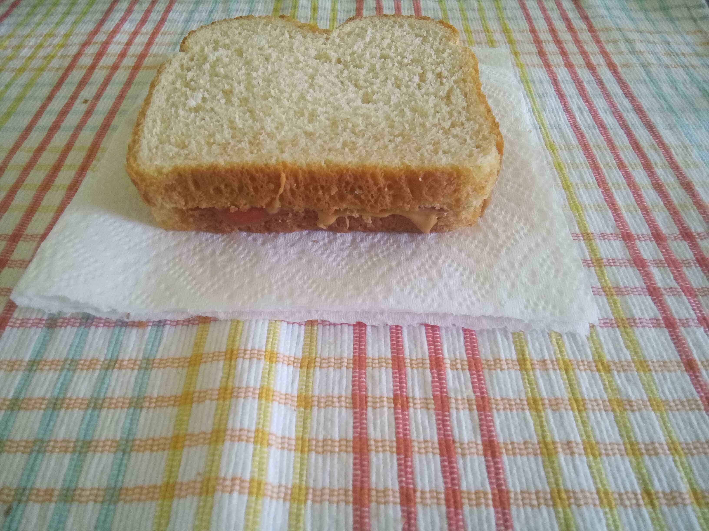
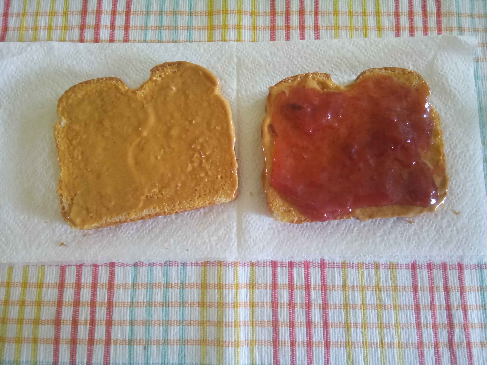

How to Make a Jelly Sandwich

Making a jelly sandwich is easy, all you need is:
| bread |
| jelly |
| peanut butter
|
now to make the sandwich
- Spread peanut butter on the side of one slice of bread
- Spread jelly on the one side of the other slice of bread

- Press the 2 slices of bread together
for more sandwich enjoyment click hear